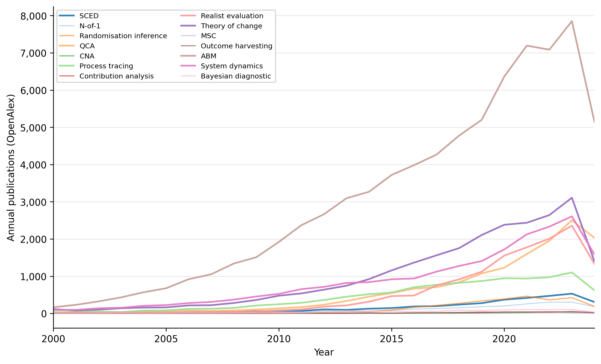

1 Introduction
Many development programmes operate at a scale that places them beyond the reach of standard impact evaluation methods. National policy reforms may affect one country, institutional capacity-building programmes may serve a single ministry, and sector-wide approaches may span only three or four provinces (OECD-DAC Network on Development Evaluation, 2019; White & Phillips, 2012). Fragile-state interventions are often implemented in contexts so specific that meaningful comparators barely exist (Bamberger et al., 2012). In each of these settings, the number of units available for causal inference falls below the thresholds that large-sample techniques require for valid estimation and testing.
Large-n counterfactual designs dominate the evidence architecture of development (International Initiative for Impact Evaluation, 2020; White & Phillips, 2012). Randomised controlled trials as well as many quasi-experimental designs such as difference-in-differences estimators, instrumental variables, matching and regression discontinuity designs all depend on assumptions that fail or become untestable as the number of units shrinks. Asymptotic properties that underwrite standard inference cease to apply. Conventional significance thresholds become uninformative when the sampling distribution of the test statistic cannot be reliably estimated. The result is a mismatch between the demand for rigorous causal evidence and the methods that are widely available and promoted.
The mismatch matters because the demand for rigorous causal evidence in small-n settings is growing, not receding. The revised OECD-DAC evaluation criteria call for assessments of impact and coherence across all programme types, including those operating at local scale (OECD-DAC Network on Development Evaluation, 2019). The Sustainable Development Goals themselves generate evaluation questions at the level of individual countries, sectors, and institutions, where large-n designs are rarely feasible. Evaluators and commissioners need methods that produce credible causal claims when the number of treated units, comparison cases, or time points is small. Those methods exist, but the guidance on how to select, apply, and combine them has not kept pace with their development.
The gap is consequential for evidence-informed policymaking (EIPM). A conceptual framework for the evidence-to-policy ecosystem (Sempé et al., 2025) identifies four pathways through which evidence influences policy: capabilities of evidence producers and users, relationships and networks among actors, institutional structures and processes, and evidence culture. When evaluators lack methods suited to a programme’s scale, the bottleneck sits at the production stage of the ecosystem; no amount of knowledge brokering or institutional reform can compensate for evidence that was never generated. This paper addresses that supply-side constraint by expanding the methodological toolkit and providing a structured framework for its application.
A small number of documents have attempted to map the field of small-n evaluation methods systematically. Leeuw & Vaessen (2009) produced an early overview for the Network of Networks on Impact Evaluation (NONIE), setting out a broad typology of evaluation approaches that accommodated non-experimental designs without focusing exclusively on the small-n case. White & Phillips (2012) then produced the first treatment dedicated to small-n impact evaluation at 3ie, organising methods into two broad groups: those that construct a counterfactual and those that trace causal mechanisms. The paper introduced a useful conceptual distinction, though its coverage naturally reflected the methods available at the time, and the two-group classification left room for finer epistemological differentiation. Department for International Development (2012) argued for methodological pluralism and provided a broader mapping of designs and methods, but did not develop a systematic framework for choosing among small-n methods specifically. Vaessen et al. (2020) assembled an extensive sourcebook drawing on the World Bank’s Independent Evaluation Group, yet the book is not organised around the small-n problem; the reader must extract the relevant subset without the benefit of a unifying framework. Fox et al. (2022) produced the most detailed guide to date, presenting method profiles with explicit attention to sample size constraints and analytical procedures.
Publication trends confirm that the repertoire has shifted since these guides were written. Between 2012 and 2024, annual publication counts for several small-n methods increased substantially (Figure 1.1): qualitative comparative analysis grew from 236 to over 2,000 publications per year, realist evaluation from 183 to over 2,000, and single-case experimental designs from 109 to over 470 (OpenAlex, 2026). Methods that were marginal or non-existent in the guides, such as coincidence analysis, outcome harvesting, and Bayesian process tracing, now have active research communities. Any guide written today must account for these developments.
Yet growth in the academic literature has not translated into routine use. An evidence gap map of 5,327 empirical studies in fragile and conflict-affected settings (FCAS), contexts where small samples are the norm rather than the exception, found that specialised small-n causal inference methods remain rare (Sempé, 2026). Among all studies, only 38 mentioned Bayesian methods, 15 used process tracing, 7 applied realist evaluation, 6 employed system dynamics, 2 used agent-based modelling, and 1 each reported QCA and contribution analysis. Most Significant Change and outcome harvesting appeared in none. Even among the 1,154 studies with 15 or fewer units, the dominant analytical techniques were conventional approaches such as difference-in-differences, propensity score methods, and thematic analysis; the causal inference methods designed specifically for small samples were virtually absent. The gap between the methods that exist and the methods that practitioners actually deploy is one motivation for the decision framework and integration protocols presented in Part III.

1.1 Contribution, scope, and structure
This paper builds on the foundations laid by these earlier guides, particularly the counterfactual-versus-mechanism distinction introduced by White & Phillips (2012) and the methodological pluralism advocated by Department for International Development (2012). It extends their contributions in four directions. The first is an organising framework of eight causal inference logics, developed in Chapter 3. Rather than treating small-n methods as a flat list, the framework identifies eight distinct logics that small-n methods operationalise: regularity, counterfactual, multiple causation, manipulation, generative, participatory, simulated, and diagnostic. Each logic provides a different warrant for causal claims. Organising methods by the logic they invoke clarifies what each method can and cannot establish. It also reveals that many methods combine two or more logics, a property that existing guides treat as incidental rather than systematic.
The second contribution is coverage of methods that post-date from earlier guides. Chapter 4 treats single-case experimental designs and N-of-1 trials as rigorous counterfactual methods for small samples, including randomisation inference as an inferential tool. Chapter 5 introduces coincidence analysis alongside qualitative comparative analysis. Chapter 8 adds outcome harvesting to the participatory toolkit. Chapter 9 presents agent-based modelling and system dynamics as computational complements to small-n designs.
The third is a formal decision framework (Chapter 10). Existing guides advise evaluators to “consider” various factors when selecting a method but do not provide a structured tool for doing so. The decision framework crosses evaluation questions, programme attributes, and data constraints to produce a recommended set of causal logics and candidate methods. The fourth is a set of cross-logic integration protocols (Chapter 11) that specify how evidence from one causal logic can strengthen, qualify, or challenge claims produced under another.
The focus is impact evaluation understood as causal attribution or causal contribution: warranted claims about whether, how, or why an intervention caused observed outcomes. “Small n” is defined formally in Chapter 2 as a multi-dimensional condition encompassing few programme units, few participants, few comparators, and few time points. Where a method requires conditions available only at larger scale, the paper acknowledges this boundary rather than forcing a small-n interpretation. Synthetic control methods, which require a sizeable donor pool, are one such case. Examples throughout the paper are drawn from governance, health, education, agriculture, infrastructure, and fragile-state programming. The methods themselves are domain-general; the practical guidance and decision framework are calibrated to constraints that development evaluators typically face.
The paper is organised in four parts. Chapter 2 and Chapter 3 establish the conceptual foundations. Part II (Chapters 4 to 9) presents methods grouped by causal logic, each chapter opening with the epistemological warrant that the relevant logic provides. Part III addresses integration and practice: Chapter 10 provides the decision matrix, Chapter 11 presents combination protocols, and Chapter 12 discusses bias, transparency, and reporting standards. The concluding chapter (Chapter 13) synthesises the argument and identifies priorities for methodological development.